Vaccination and delays in vaccination due to COVID-19
Duc Du
2020-01-29 (update: 2022-03-06)
Last updated: 2022-03-06
Checks: 6 1
Knit directory: Vaccination_COVID/
This reproducible R Markdown analysis was created with workflowr (version 1.7.0). The Checks tab describes the reproducibility checks that were applied when the results were created. The Past versions tab lists the development history.
The R Markdown is untracked by Git. To know which version of the R Markdown file created these results, you’ll want to first commit it to the Git repo. If you’re still working on the analysis, you can ignore this warning. When you’re finished, you can run wflow_publish to commit the R Markdown file and build the HTML.
Great job! The global environment was empty. Objects defined in the global environment can affect the analysis in your R Markdown file in unknown ways. For reproduciblity it’s best to always run the code in an empty environment.
The command set.seed(20210126) was run prior to running the code in the R Markdown file. Setting a seed ensures that any results that rely on randomness, e.g. subsampling or permutations, are reproducible.
Great job! Recording the operating system, R version, and package versions is critical for reproducibility.
Nice! There were no cached chunks for this analysis, so you can be confident that you successfully produced the results during this run.
Great job! Using relative paths to the files within your workflowr project makes it easier to run your code on other machines.
Great! You are using Git for version control. Tracking code development and connecting the code version to the results is critical for reproducibility.
The results in this page were generated with repository version dbf117b. See the Past versions tab to see a history of the changes made to the R Markdown and HTML files.
Note that you need to be careful to ensure that all relevant files for the analysis have been committed to Git prior to generating the results (you can use wflow_publish or wflow_git_commit). workflowr only checks the R Markdown file, but you know if there are other scripts or data files that it depends on. Below is the status of the Git repository when the results were generated:
Ignored files:
Ignored: .Rhistory
Ignored: .Rproj.user/
Untracked files:
Untracked: analysis/04_merge_child_measle_thinh.Rmd
Untracked: analysis/05_merge_child_hepatitisb.Rmd
Untracked: analysis/05_merge_child_measle_report_updated2.Rmd
Untracked: data/birthGSO.rds
Unstaged changes:
Modified: analysis/01_data_cleaning2.Rmd
Modified: analysis/01_data_cleaning_private.Rmd
Modified: analysis/04_merge_child_measle.Rmd
Modified: analysis/05_calc_births_gso.Rmd
Modified: analysis/05_merge_child_measle_report_updated.Rmd
Modified: code/02_vacname_private.R
Note that any generated files, e.g. HTML, png, CSS, etc., are not included in this status report because it is ok for generated content to have uncommitted changes.
There are no past versions. Publish this analysis with wflow_publish() to start tracking its development.
knitr::opts_chunk$set(echo = FALSE, warning = FALSE, message = FALSE, cache.lazy = FALSE,
tidy.opts=list(width.cutoff=60),
tidy=TRUE,
root.dir = rprojroot::find_rstudio_root_file())
library(workflowr)This is workflowr version 1.7.0
Run ?workflowr for help getting startedlibrary(data.table)
library(tidyverse)── Attaching packages ─────────────────────────────────────── tidyverse 1.3.1 ──✓ ggplot2 3.3.5 ✓ purrr 0.3.4
✓ tibble 3.1.6 ✓ dplyr 1.0.8
✓ tidyr 1.2.0 ✓ stringr 1.4.0
✓ readr 2.1.2 ✓ forcats 0.5.1── Conflicts ────────────────────────────────────────── tidyverse_conflicts() ──
x dplyr::between() masks data.table::between()
x dplyr::filter() masks stats::filter()
x dplyr::first() masks data.table::first()
x dplyr::lag() masks stats::lag()
x dplyr::last() masks data.table::last()
x purrr::transpose() masks data.table::transpose()library(dplyr)
library(lubridate)
Attaching package: 'lubridate'The following objects are masked from 'package:data.table':
hour, isoweek, mday, minute, month, quarter, second, wday, week,
yday, yearThe following objects are masked from 'package:base':
date, intersect, setdiff, unionlibrary(ggplot2)
library(gt)
library(gtsummary)
library(ggridges)
select <- dplyr::select
allp <- file.path("~", "updated_dataset")Introduction
COVID-19 creates negative impacts on other diseases and health conditions, one of them is vaccine preventable diseases (VPD). Lock-down periods may translate into delays in vaccination and delays in vaccination may result in increased risk of outbreaks of VPD. We quantified these delays in vaccination and related factors for measles and other VPD. We propose to translate these delays into outbreak risks for measles and other VPD with an epidemiological model.
Methods
We used data from the Vietnam Vaccine Registry collected at the commune, district and provincial levels among vaccination children who undertook their vaccine shots at either public clinics (across 28 provinces in the Northern areas) under the Expanded Program on Immunization or private clinics (across 63 provinces in the whole country) over the period from 01-01-2017 to 31-12-2020.
Results & Discussions
Characteristics of vaccination children
Table 1 describes the characteristics of vaccination children born from 1/1/2017 to 31/12/2020. Of total 2,660,841 children (53% female) vaccinated from 2017 to 2020, 822,593 (31%) were vaccinated at both public and private clinics, whereas 1,753,421 (66%) got immunized at public clinics only and 84,827 (3.2%) got immunized at private clinics only. There was an increase in the total number of children vaccinated at both public clinics and private clinics over 4 years. Similar trend was observed for those vaccinated at private clinics only from 2017 to 2019 then a bit drop in 2020 while the total number of children vaccinated at public clinics only decreased over years (Table 1).
| Characteristic | N = 2,660,8411 |
|---|---|
| province | |
| Bac Giang | 114,022 (4.3%) |
| Bac Kan | 18,588 (0.7%) |
| Bac Ninh | 92,215 (3.5%) |
| Cao Bang | 22,714 (0.9%) |
| Dien Bien | 28,291 (1.1%) |
| Ha Giang | 35,563 (1.3%) |
| Ha Nam | 53,376 (2.0%) |
| Ha Noi | 575,485 (22%) |
| Ha Tinh | 96,273 (3.6%) |
| Hai Duong | 130,741 (4.9%) |
| Hai Phong | 111,322 (4.2%) |
| Hoa Binh | 49,887 (1.9%) |
| Hung Yen | 71,643 (2.7%) |
| Lai Chau | 20,678 (0.8%) |
| Lang Son | 43,625 (1.6%) |
| Lao Cai | 32,013 (1.2%) |
| Nam Dinh | 113,451 (4.3%) |
| Nghe An | 216,003 (8.1%) |
| Ninh Binh | 60,340 (2.3%) |
| Phu Tho | 92,363 (3.5%) |
| Quang Ninh | 71,194 (2.7%) |
| Son La | 68,727 (2.6%) |
| Thai Binh | 98,619 (3.7%) |
| Thai Nguyen | 77,940 (2.9%) |
| Thanh Hoa | 215,022 (8.1%) |
| Tuyen Quang | 34,492 (1.3%) |
| Vinh Phuc | 77,662 (2.9%) |
| Yen Bai | 38,592 (1.5%) |
| sex | |
| F | 1,399,593 (53%) |
| M | 1,261,248 (47%) |
| age | |
| 1 | 678,947 (26%) |
| 2 | 710,701 (27%) |
| 3 | 662,815 (25%) |
| 4 | 608,378 (23%) |
| type | |
| both | 822,593 (31%) |
| public | 1,753,421 (66%) |
| private | 84,827 (3.2%) |
| type2 | |
| private | 214,478 (8.1%) |
| public | 2,446,363 (92%) |
| V6 | |
| 2017 | 608,378 (23%) |
| 2018 | 662,815 (25%) |
| 2019 | 710,701 (27%) |
| 2020 | 678,947 (26%) |
| 1 n (%) | |
The number of births calculated from GSO data:
| province | birth17_20 | |
|---|---|---|
| 3 | Bac Giang | 129763.69 |
| 4 | Bac Kan | 18687.45 |
| 6 | Bac Ninh | 119825.50 |
| 14 | Cao Bang | 35735.14 |
| 18 | Dien Bien | 52202.35 |
| 22 | Ha Giang | 66130.02 |
| 23 | Ha Nam | 50575.10 |
| 24 | Ha Noi | 535456.93 |
| 25 | Ha Tinh | 92919.73 |
| 26 | Hai Duong | 125017.33 |
| 27 | Hai Phong | 117941.59 |
| 30 | Hoa Binh | 53101.87 |
| 31 | Hung Yen | 79450.34 |
| 35 | Lai Chau | 38836.71 |
| 37 | Lang Son | 48045.51 |
| 38 | Lao Cai | 54819.83 |
| 40 | Nam Dinh | 107240.45 |
| 41 | Nghe An | 269954.36 |
| 43 | Ninh Binh | 60007.85 |
| 44 | Phu Tho | 98911.81 |
| 49 | Quang Ninh | 82483.02 |
| 52 | Son La | 96655.41 |
| 55 | Thai Binh | 97442.10 |
| 56 | Thanh Hoa | 251077.65 |
| 60 | Tuyen Quang | 53408.73 |
| 62 | Vinh Phuc | 79888.49 |
| 63 | Yen Bai | 63313.03 |
| Variable | N | both, N = 822,5931 | public, N = 1,753,4211 | private, N = 84,8271 |
|---|---|---|---|---|
| age | 2,660,841 | |||
| 1 | 206,138 (25%) | 445,499 (25%) | 27,310 (32%) | |
| 2 | 268,583 (33%) | 421,541 (24%) | 20,577 (24%) | |
| 3 | 230,415 (28%) | 414,372 (24%) | 18,028 (21%) | |
| 4 | 117,457 (14%) | 472,009 (27%) | 18,912 (22%) | |
| sex | 2,660,841 | |||
| F | 442,304 (54%) | 911,978 (52%) | 45,311 (53%) | |
| M | 380,289 (46%) | 841,443 (48%) | 39,516 (47%) | |
| province | 2,660,841 | |||
| Bac Giang | 17,347 (2.1%) | 94,071 (5.4%) | 2,604 (3.1%) | |
| Bac Kan | 1,742 (0.2%) | 16,687 (1.0%) | 159 (0.2%) | |
| Bac Ninh | 40,594 (4.9%) | 49,393 (2.8%) | 2,228 (2.6%) | |
| Cao Bang | 2,535 (0.3%) | 20,019 (1.1%) | 160 (0.2%) | |
| Dien Bien | 2,481 (0.3%) | 25,756 (1.5%) | 54 (<0.1%) | |
| Ha Giang | 2,465 (0.3%) | 32,837 (1.9%) | 261 (0.3%) | |
| Ha Nam | 12,734 (1.5%) | 39,558 (2.3%) | 1,084 (1.3%) | |
| Ha Noi | 333,548 (41%) | 199,522 (11%) | 42,415 (50%) | |
| Ha Tinh | 17,555 (2.1%) | 78,057 (4.5%) | 661 (0.8%) | |
| Hai Duong | 56,571 (6.9%) | 71,632 (4.1%) | 2,538 (3.0%) | |
| Hai Phong | 34,348 (4.2%) | 65,806 (3.8%) | 11,168 (13%) | |
| Hoa Binh | 7,432 (0.9%) | 41,665 (2.4%) | 790 (0.9%) | |
| Hung Yen | 29,224 (3.6%) | 40,670 (2.3%) | 1,749 (2.1%) | |
| Lai Chau | 1,262 (0.2%) | 19,348 (1.1%) | 68 (<0.1%) | |
| Lang Son | 5,690 (0.7%) | 37,477 (2.1%) | 458 (0.5%) | |
| Lao Cai | 3,467 (0.4%) | 27,770 (1.6%) | 776 (0.9%) | |
| Nam Dinh | 32,487 (3.9%) | 78,249 (4.5%) | 2,715 (3.2%) | |
| Nghe An | 38,047 (4.6%) | 174,904 (10.0%) | 3,052 (3.6%) | |
| Ninh Binh | 9,384 (1.1%) | 49,414 (2.8%) | 1,542 (1.8%) | |
| Phu Tho | 31,479 (3.8%) | 59,951 (3.4%) | 933 (1.1%) | |
| Quang Ninh | 28,003 (3.4%) | 41,949 (2.4%) | 1,242 (1.5%) | |
| Son La | 5,044 (0.6%) | 63,543 (3.6%) | 140 (0.2%) | |
| Thai Binh | 18,063 (2.2%) | 79,168 (4.5%) | 1,388 (1.6%) | |
| Thai Nguyen | 18,445 (2.2%) | 58,494 (3.3%) | 1,001 (1.2%) | |
| Thanh Hoa | 40,598 (4.9%) | 171,939 (9.8%) | 2,485 (2.9%) | |
| Tuyen Quang | 3,257 (0.4%) | 30,300 (1.7%) | 935 (1.1%) | |
| Vinh Phuc | 22,826 (2.8%) | 53,032 (3.0%) | 1,804 (2.1%) | |
| Yen Bai | 5,965 (0.7%) | 32,210 (1.8%) | 417 (0.5%) | |
| type2 | 2,660,841 | |||
| private | 129,651 (16%) | 0 (0%) | 84,827 (100%) | |
| public | 692,942 (84%) | 1,753,421 (100%) | 0 (0%) | |
| year | 2,660,841 | |||
| 2017 | 117,457 (14%) | 472,009 (27%) | 18,912 (22%) | |
| 2018 | 230,415 (28%) | 414,372 (24%) | 18,028 (21%) | |
| 2019 | 268,583 (33%) | 421,541 (24%) | 20,577 (24%) | |
| 2020 | 206,138 (25%) | 445,499 (25%) | 27,310 (32%) | |
| 1 n (%) | ||||
Child overall
Children born by month and year
Overall trend of vaccination children born from 2017 to 2020 was shown in Figure 1. There was a steady increase in the total number of children born from February (around Tet holiday) to October, reach a peak in between September and October, then drop in the next month, annually. Similar trend was observed for each year (Figure 1).
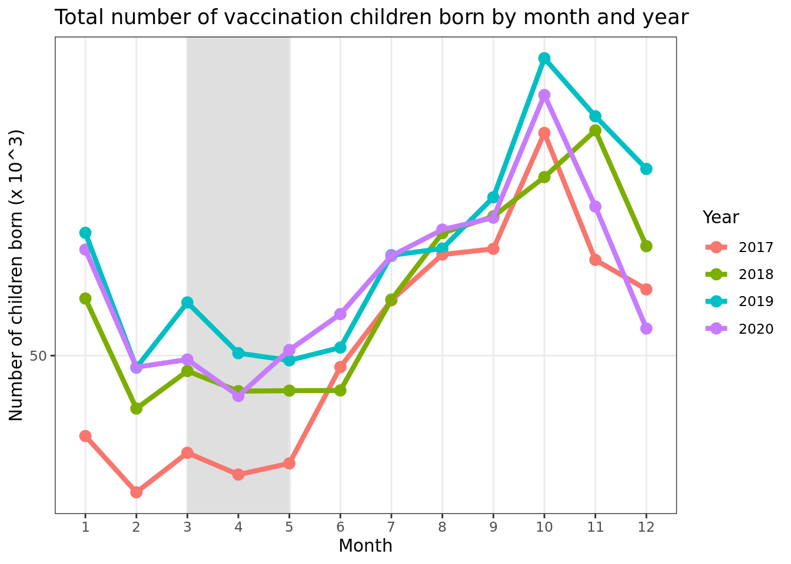
There was an increase in the total number of children born from 2017 to 2019. The number of children born then decreased in 2020 (Figure 2).
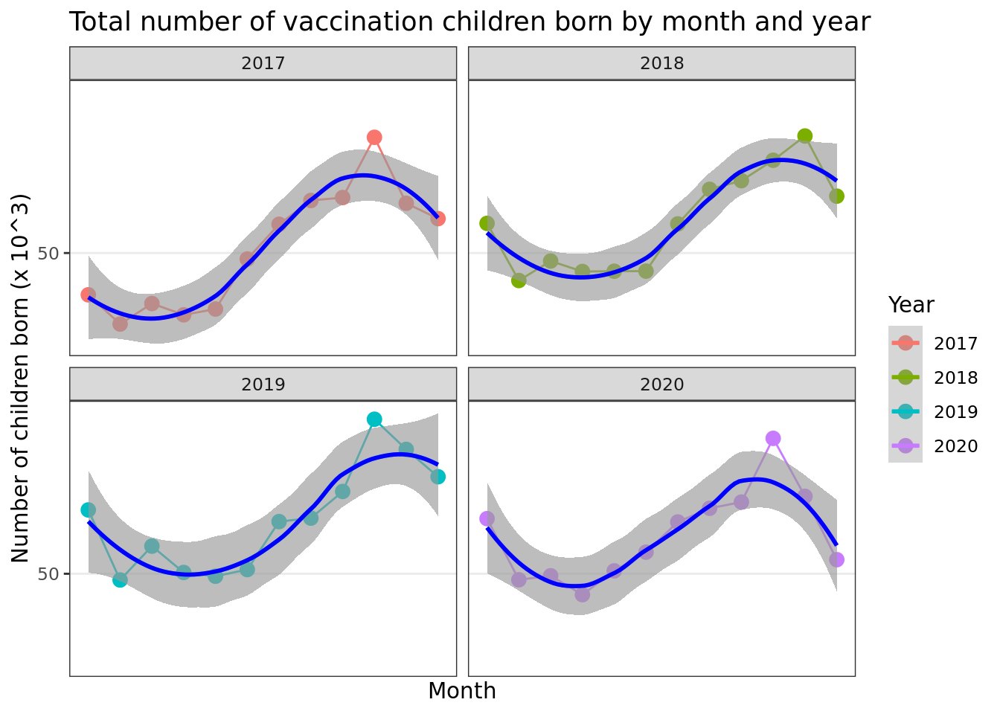 ## Children born by province
Total number of vaccination children born in each province by month and year from 2017 to 2020 was shown in Figure 3. In general, similar trend was observed in most of provinces (Figure 3).
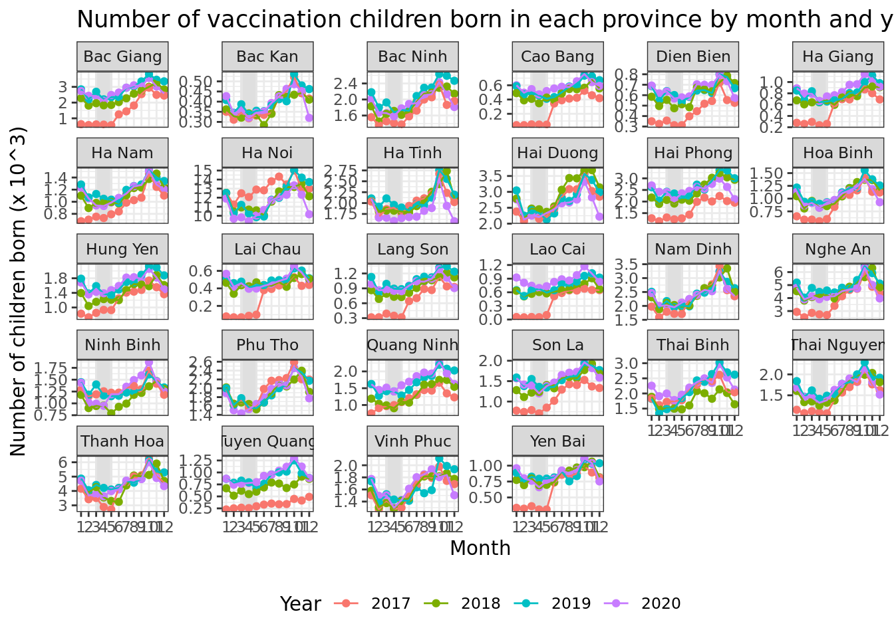
Measle merge
Measle vaccination
Measle vaccination shots by month and year
Overall trend of Measle vaccination shots by month and year from 2017 to 2020 was shown in Figure 4. There was a steady increase in the total number of Measle vaccine shots from January to December, annually with a peak at different months in each year. There was a big reduction in total number of Measle vaccine shots in April, 2020 which was the first national lockdown period in Vietnam due to the COVID-19 pandemic (Figure 4).
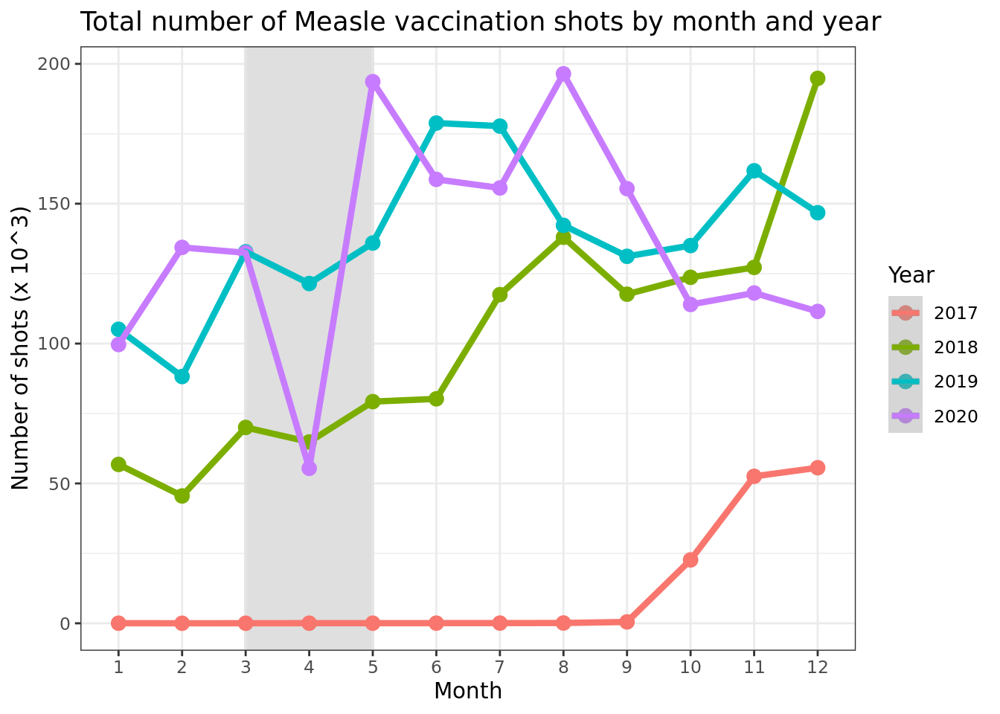 ### Measle vaccination shots by type of clinics
Similar trends of Measle vaccine shots were observed for shots taken at public clinics only, private clinics only and for those taken vaccines at both public and private clinics, separately. In general, the number of Measle vaccine shots taken in public clinics were higher than those taken in private clinics (Figure 5).
 There has been a steady increase in total number of Measle vaccination shots from 2017 to the middle of 2020, then level off and decline in the last half of 2020 (Figure 6).
There has been a steady increase in total number of Measle vaccination shots from 2017 to the middle of 2020, then level off and decline in the last half of 2020 (Figure 6).
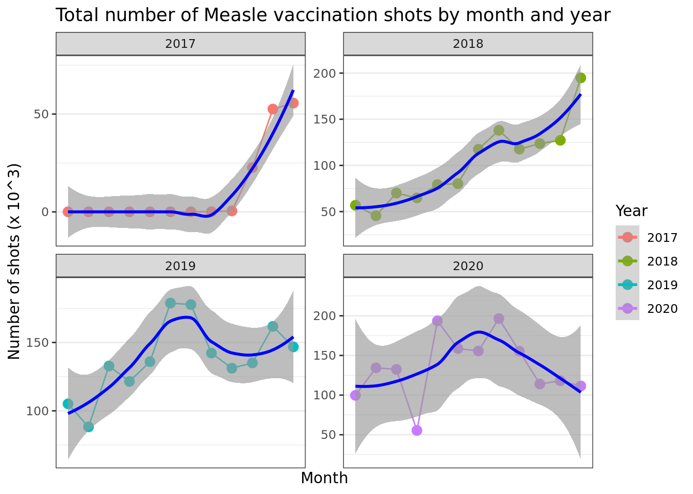
Delays in vaccination
We quantifed the delays in Measle vaccination over years. The distribution of the delays in Measle vaccination (in months) for children born from 2017 to 2020 was shown in Figure 7. The earlier the children born, the longer in delays of Measle vaccination they could probably have. The longest delays of Measle vaccination can be up to more than 30 months for the Measle vaccine and 30 months for the Measle-Rubella vaccine compared to the schedule of those vaccines they supposed to take. According the recommended immunization schedule, the schedule of Measle and Measle-Rubella vaccines taken was 9 months and 18 months after the children were born, respectively. There was no data on the delays of Measle vaccination from the last haft of 2019 to the end of 2020 (Figure 7).
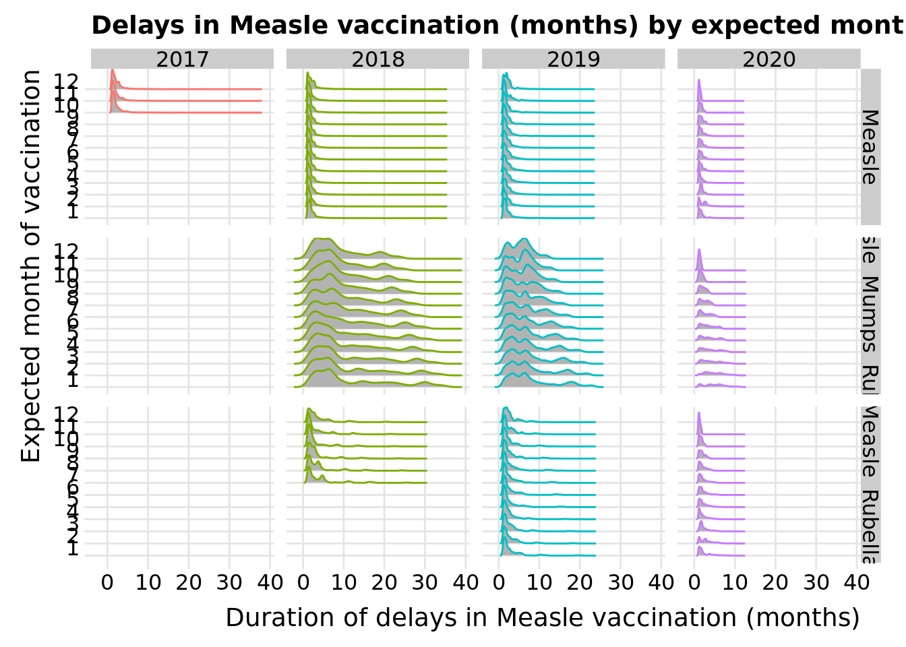
Factors associated with delays in vaccination
The probability of the delays in Measle vaccination (dichotomous outcome: delay versus no delay) was modeled to see if it depends on other related factors. The delays in Measle vaccination were shown to be dependent on age (p<0.001), province (p<0.001), type of vaccine (p<0.001), vaccination period (before and after COVID-19 pandemic) (p<0.001).
| Variable | N | 0, N = 2,684,4021 | 1, N = 1,644,9591 | p-value2 |
|---|---|---|---|---|
| age | 4,329,361 | <0.001 | ||
| 1 | 98,920 (84%) | 18,253 (16%) | ||
| 2 | 713,439 (67%) | 354,027 (33%) | ||
| 3 | 835,524 (57%) | 625,384 (43%) | ||
| 4 | 1,036,519 (62%) | 647,295 (38%) | ||
| sex | 4,329,361 | <0.001 | ||
| F | 1,401,507 (61%) | 891,765 (39%) | ||
| M | 1,282,895 (63%) | 753,194 (37%) | ||
| vacname2 | 4,329,361 | <0.001 | ||
| Measle | 1,606,007 (70%) | 694,517 (30%) | ||
| Measle_Mumps_Rubella | 173,876 (29%) | 424,416 (71%) | ||
| Measle_Rubella | 904,519 (63%) | 526,026 (37%) | ||
| vacdate_f | 4,329,361 | <0.001 | ||
| Before | 2,009,914 (64%) | 1,140,999 (36%) | ||
| After | 674,488 (57%) | 503,960 (43%) | ||
| vdelay | 4,329,361 | 0.37 (0.13, 0.66) | 2.17 (1.48, 4.26) | <0.001 |
| type | 4,329,361 | <0.001 | ||
| both | 296,596 (40%) | 452,920 (60%) | ||
| public | 2,152,843 (67%) | 1,072,961 (33%) | ||
| private | 234,963 (66%) | 119,078 (34%) | ||
| 1 n (%); Median (IQR) | ||||
| 2 Pearson's Chi-squared test; Wilcoxon rank sum test | ||||
pid province district commune sex dob
Low:effect <NA> <NA> <NA> <NA> <NA> 2017-08-20
Adjust to 104091520170007 Ha Noi Hoang Mai Quang Trung F 2018-04-10
High:effect <NA> <NA> <NA> <NA> <NA> 2019-01-11
Low:prediction 101010120070004 Bac Giang An Duong 01 F 2017-01-01
High:prediction 823141220180115 Yen Bai Yen Thuy Yet Kieu M 2020-10-22
Low 101010120070004 Bac Giang An Duong 01 F 2017-01-01
High 823141220180115 Yen Bai Yen Thuy Yet Kieu M 2020-12-19
vacname2 start shot vacdate vyear vmonth year month
Low:effect <NA> 9 <NA> 2018-12-03 2018 5 2017 3
Adjust to Measle 12 1 2019-08-09 2019 7 2018 6
High:effect <NA> 18 <NA> 2020-05-10 2020 10 2019 10
Low:prediction Measle 9 1 2017-01-08 2017 1 2017 1
High:prediction Measle_Rubella 18 12 2020-12-30 2020 12 2020 12
Low Measle 9 1 2017-01-02 2017 1 2017 1
High Measle_Rubella 18 12 2021-01-13 2021 12 2020 12
vagem vagem2 vdelay vsche vsyear vsmonth
Low:effect 9 9.626283 0.2648871 2018-10-18 2018 4
Adjust to 12 12.123203 0.7268994 2019-07-30 2019 7
High:effect 18 18.694045 1.7104723 2020-03-15 2020 10
Low:prediction 0 0.000000 -18.0000000 2017-10-01 2017 1
High:prediction 47 47.540041 35.6635262 2021-11-21 2021 12
Low 0 0.000000 -18.0000000 2017-10-01 2017 1
High 47 47.868583 37.4558522 2021-12-19 2021 12
vdelayd type type2 vdelay_outcome age
Low:effect 2018-10-18 01:00:01 <NA> <NA> 0 2
Adjust to 2019-07-30 00:56:19 public public 0 3
High:effect 2020-03-15 00:52:23 <NA> <NA> 1 4
Low:prediction 2017-10-01 17:38:34 both private 0 1
High:prediction 2021-11-21 10:34:27 private public 1 4
Low 2017-10-01 17:28:53 both private 0 1
High 2021-12-19 00:49:35 private public 1 4
vacdate_f
Low:effect <NA>
Adjust to Before
High:effect <NA>
Low:prediction Before
High:prediction After
Low Before
High After
Values:
pid :
[1] 101010120070004 101010120170002 101010120170003 101010120170004
[5] 101010120170005 101010120170006 101010120170007 101010120170008
[9] 101010120170010 101010120170011 101010120170012 101010120170013
[13] 101010120170014 101010120170015 101010120170016 101010120170017
[17] 101010120170018 101010120170019 101010120170020 101010120170022
[21] + 2504150 others
province :
[1] Bac Giang Bac Kan Bac Ninh Cao Bang Dien Bien Ha Giang
[7] Ha Nam Ha Noi Ha Tinh Hai Duong Hai Phong Hoa Binh
[13] Hung Yen Lai Chau Lang Son Lao Cai Nam Dinh Nghe An
[19] Ninh Binh Phu Tho Quang Ninh Son La Thai Binh Thai Nguyen
[25] Thanh Hoa Tuyen Quang Vinh Phuc Yen Bai
district :
[1] An Duong An Lao An Thi Anh Son Ba Be
[6] Ba Che Ba Dinh Ba Thuoc Ba Vi Bac Ha
[11] Bac Me Bac Quang Bac Son Bac Tu Liem Bac Yen
[16] Bach Long Vi Bach Thong Bao Lac Bao Lam Bao Thang
[21] + 328 others
commune :
[1] 01 A Lu A Mu Sung Ai Quoc Ai Thuong
[6] Am Ha An ap An Ba An Bien An Binh
[11] An Cau An Chau An Dao An Do An Dong
[16] An Duc An Dung An Duong An Ha An Hiep
[21] + 4353 others
sex : F M
vacname2 : Measle Measle_Mumps_Rubella Measle_Rubella
start : 9 12 18
shot : 1 2 3 4 5 6 7 8 9 10 11 12
vyear : 2017 2018 2019 2020 2021
year : 2017 2018 2019 2020
vsyear : 2017 2018 2019 2020 2021
type : both public private
type2 : private public
vdelay_outcome : 0 1
age : 1 2 3 4
vacdate_f : Before After Wald Statistics Response: vdelay_outcome
Factor Chi-Square d.f. P
age 16550.22 1 <.0001
TOTAL 16550.22 1 <.0001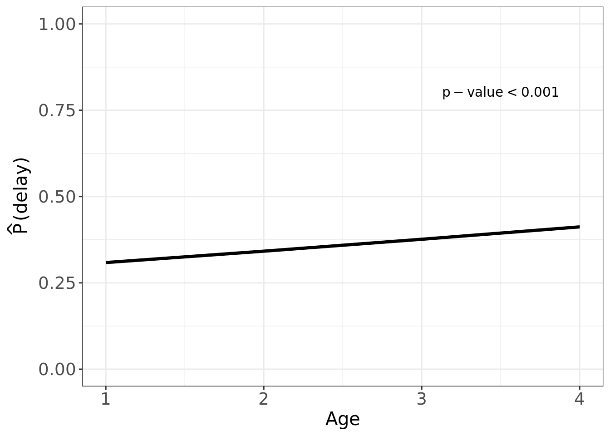
Wald Statistics Response: vdelay_outcome
Factor Chi-Square d.f. P
sex 1641.87 1 <.0001
TOTAL 1641.87 1 <.0001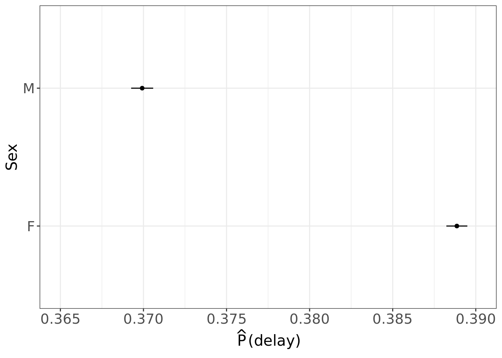
Wald Statistics Response: vdelay_outcome
Factor Chi-Square d.f. P
province 30556.77 27 <.0001
TOTAL 30556.77 27 <.0001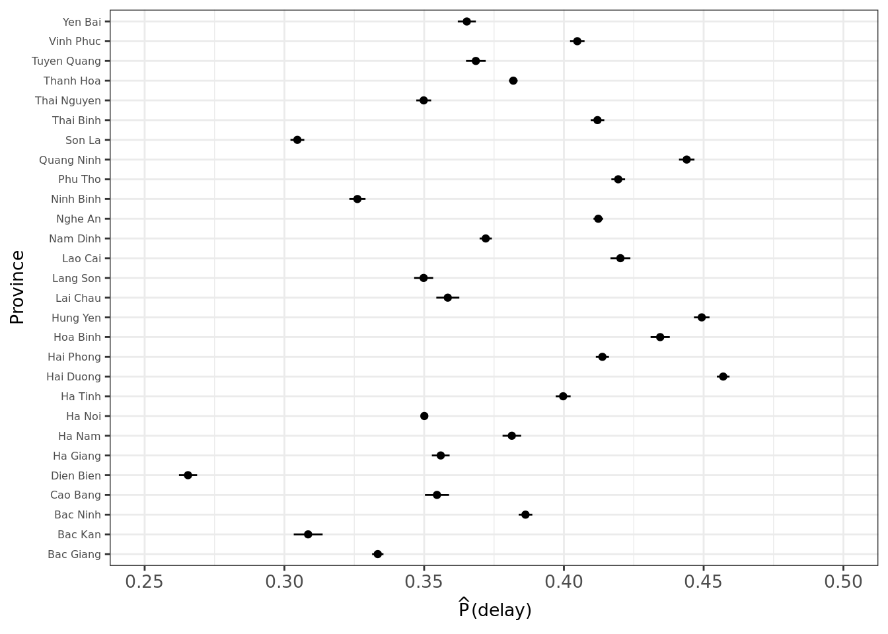
Wald Statistics Response: vdelay_outcome
Factor Chi-Square d.f. P
vacdate_f 15591.68 1 <.0001
TOTAL 15591.68 1 <.0001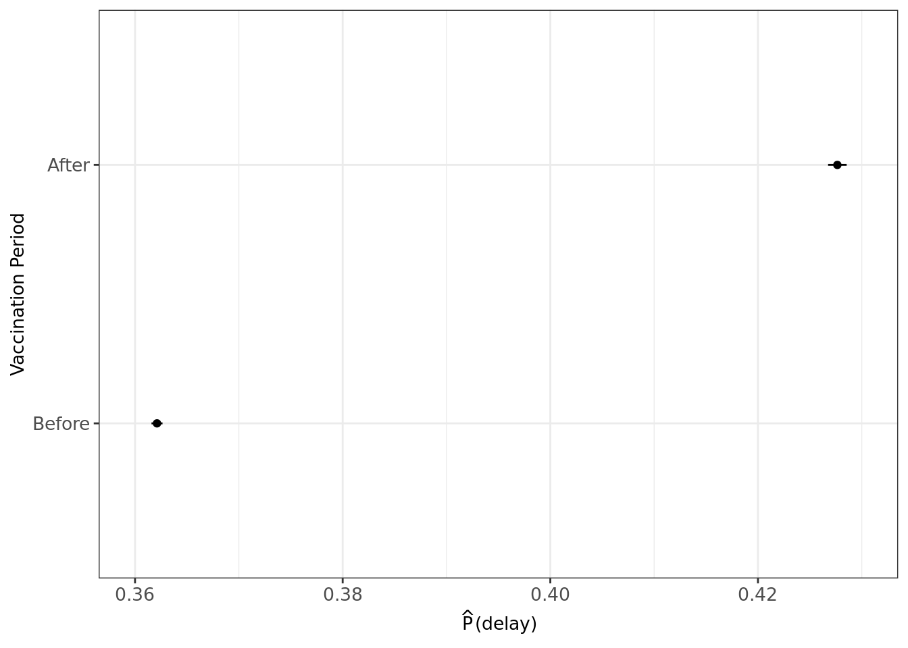
Wald Statistics Response: vdelay_outcome
Factor Chi-Square d.f. P
type 182848.9 2 <.0001
TOTAL 182848.9 2 <.0001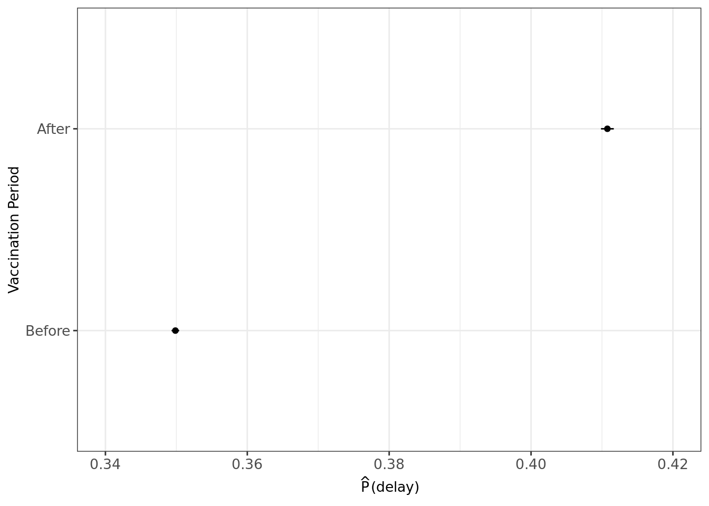
R version 4.0.5 (2021-03-31)
Platform: x86_64-pc-linux-gnu (64-bit)
Running under: Ubuntu 18.04.5 LTS
Matrix products: default
BLAS: /usr/lib/x86_64-linux-gnu/blas/libblas.so.3.7.1
LAPACK: /usr/lib/x86_64-linux-gnu/lapack/liblapack.so.3.7.1
locale:
[1] LC_CTYPE=C.UTF-8 LC_NUMERIC=C LC_TIME=C.UTF-8
[4] LC_COLLATE=C.UTF-8 LC_MONETARY=C.UTF-8 LC_MESSAGES=C.UTF-8
[7] LC_PAPER=C.UTF-8 LC_NAME=C LC_ADDRESS=C
[10] LC_TELEPHONE=C LC_MEASUREMENT=C.UTF-8 LC_IDENTIFICATION=C
attached base packages:
[1] stats graphics grDevices utils datasets methods base
other attached packages:
[1] rms_6.2-0 SparseM_1.81 Hmisc_4.6-0 Formula_1.2-4
[5] survival_3.2-10 lattice_0.20-41 ggridges_0.5.3 gtsummary_1.5.2
[9] gt_0.4.0 lubridate_1.8.0 forcats_0.5.1 stringr_1.4.0
[13] dplyr_1.0.8 purrr_0.3.4 readr_2.1.2 tidyr_1.2.0
[17] tibble_3.1.6 ggplot2_3.3.5 tidyverse_1.3.1 data.table_1.14.2
[21] workflowr_1.7.0
loaded via a namespace (and not attached):
[1] TH.data_1.1-0 colorspace_2.0-3 ellipsis_0.3.2
[4] rprojroot_2.0.2 htmlTable_2.4.0 base64enc_0.1-3
[7] fs_1.5.2 rstudioapi_0.13 farver_2.1.0
[10] MatrixModels_0.5-0 fansi_1.0.2 mvtnorm_1.1-3
[13] xml2_1.3.3 codetools_0.2-18 splines_4.0.5
[16] knitr_1.37 jsonlite_1.8.0 broom_0.7.12
[19] cluster_2.1.1 dbplyr_2.1.1 png_0.1-7
[22] compiler_4.0.5 httr_1.4.2 backports_1.4.1
[25] assertthat_0.2.1 Matrix_1.3-2 fastmap_1.1.0
[28] cli_3.2.0 later_1.3.0 htmltools_0.5.2
[31] quantreg_5.88 tools_4.0.5 gtable_0.3.0
[34] glue_1.6.2 Rcpp_1.0.8 cellranger_1.1.0
[37] jquerylib_0.1.4 vctrs_0.3.8 nlme_3.1-152
[40] broom.helpers_1.6.0 xfun_0.29 ps_1.6.0
[43] rvest_1.0.2 lifecycle_1.0.1 polspline_1.1.19
[46] getPass_0.2-2 MASS_7.3-53.1 zoo_1.8-9
[49] scales_1.1.1 hms_1.1.1 promises_1.2.0.1
[52] sandwich_3.0-1 RColorBrewer_1.1-2 yaml_2.3.5
[55] gridExtra_2.3 sass_0.4.0 rpart_4.1-15
[58] latticeExtra_0.6-29 stringi_1.7.6 highr_0.9
[61] checkmate_2.0.0 rlang_1.0.1 pkgconfig_2.0.3
[64] commonmark_1.7 evaluate_0.15 htmlwidgets_1.5.4
[67] labeling_0.4.2 processx_3.5.2 tidyselect_1.1.2
[70] plyr_1.8.6 magrittr_2.0.2 R6_2.5.1
[73] generics_0.1.2 multcomp_1.4-18 DBI_1.1.2
[76] pillar_1.7.0 haven_2.4.3 whisker_0.4
[79] foreign_0.8-81 withr_2.4.3 mgcv_1.8-33
[82] nnet_7.3-15 modelr_0.1.8 crayon_1.5.0
[85] utf8_1.2.2 tzdb_0.2.0 rmarkdown_2.11
[88] jpeg_0.1-9 grid_4.0.5 readxl_1.3.1
[91] callr_3.7.0 git2r_0.29.0 reprex_2.0.1
[94] digest_0.6.29 httpuv_1.6.5 munsell_0.5.0